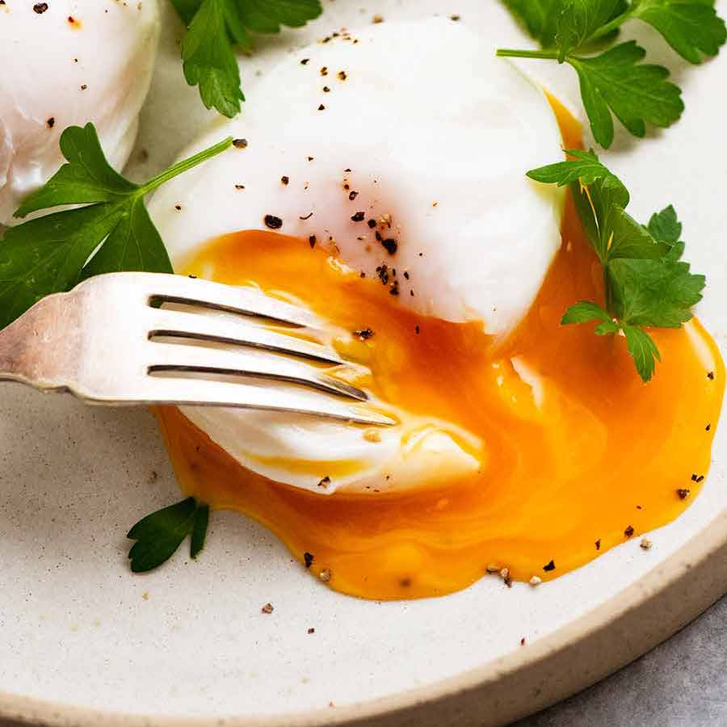

Gepocheerde eieren

Ingrediënten
- 4 verse (koele) eieren
- Natuurazijn
Benodigdheden
- Een hoge kookpot
- 4 koffiekopjes
- Een schuimspaan
- Een garde
Bereiding
- Kies een hoge kookpot om de eieren te pocheren (garen in vocht dat onder het kookpunt blijft). Hoe hoger de pot, hoe makkelijker je resultaat krijgt.
- Vul de pot voor 3/4 met water en breng het aan de kook.
- Voeg een royale scheut azijn toe tot je het zuur in het water proeft. De azijn zorgt ervoor dat het eiwit straks beter stolt. Doe er in geen geval zout in, want dat werkt averechts.
- Breek elk ei in een aparte koffiekop. Hou de dooier altijd heel. Hou ook een halve eierschaal opzij.
- Zet het vuur zachter en hou het water net onder het kookpunt. Roer met een lepel of een garde in het water tot er een draaikolk ontstaat. Leg een stukje eierschaal in het water. Zodra het afdrijft naar het midden van de pot en ter plekke op een rustige manier rondjes danst, kan je beginnen met pocheren.
- Neem de eierschaal weg en giet het (eerste) ei in het midden van de pot zacht kolkend water. Na 1 tot 2 minuten is het ei voldoende gaar. Verhoog eventueel de temperatuur van het kookvuur een beetje.
- Je kan meerdere eieren tegelijk pocheren, maar wie op veilig speelt doet het één voor één. De dooier van een gepocheerd ei hoort binnenin nog lopend te zijn.
- Vis het gepocheerde ei voorzichtig op met een schuimspaan, zodat het water weglekt. Snij eventueel losse flapjes eiwit weg.